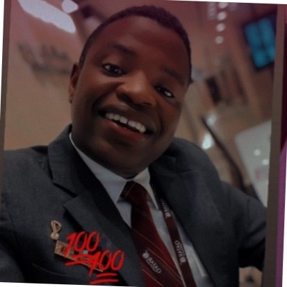

Welcome! I'm Hussein Salim, a Frontend Developer
Proactive Junior Frontend Developer with a strong foundation in HTML, CSS, and JavaScript, and a commitment to continuous learning through online platforms such as freeCodeCamp, W3Schools, and Coursera. Experienced in creating responsive web designs and converting Figma designs to functional web pages. Eager to contribute to freelance projects and enhance web development skills.
I am passionate about creating user-friendly and accessible web experiences. This portfolio website showcases my skills and projects. Feel free to explore and get in touch!
Skills
- HTML
- CSS
- JavaScript
- Responsive Web Design
- Figma to HTML
- Technical Writing
- Presentation
- Accessibility